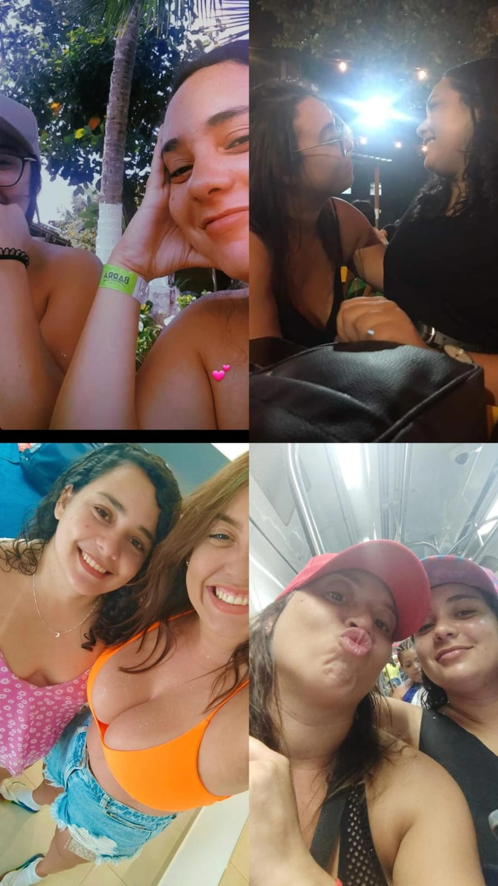
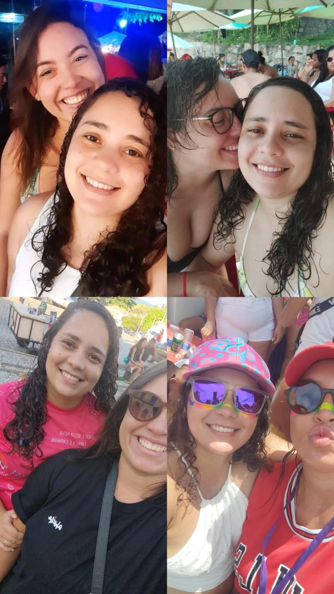

Sabe, é incrível como o destino pode tecer os fios do nosso amor em momentos que à primeira
vista parecem tão comuns. Lembra daquele show da Ivete Sangalo? No meio daquela multidão, ao som
envolvente da música, nossos corpos se encontraram e algo mágico aconteceu: nosso primeiro beijo.
Aquele momento foi tão especial, tão único. O show da Ivete não só marcou o encontro de duas almas,
mas também foi o início de uma história de amor que prometia ser tão vibrante e emocionante quanto
a própria música que nos uniu naquela noite.
E depois daquele beijo, parece que o tempo ganhou uma nova dimensão. Foram mais de um mês esperando
pelo próximo encontro, até que finalmente nos reencontramos na prévia do 'Eu Acho é Pouco'.
Lembro-me da ansiedade misturada com a emoção de reviver aqueles momentos especiais. Mas quando te
vi, toda dúvida se dissipou. Era como se o tempo se curvasse à intensidade do que sentia por você
naquele momento.
O dia 25 de setembro de 2022 foi incrível. Passamos o dia juntas, entre risos, conversas profundas
e gestos de carinho. E então, decidimos prolongar o dia, porque queríamos estar juntas por mais
tempo. Naquela noite algo especial aconteceu. Olhei nos seus olhos e soube, sem precisar de
palavras, que estávamos destinadas a viver esse amor. A partir daquele momento, nossas vidas se
entrelaçaram de maneira indissociável.

E desde então, o tempo tem sido nosso aliado nessa jornada de amor. Mais de um ano se passou
desde aquele encontro mágico, e agora estamos morando juntas, compartilhando não apenas um
espaço, mas nossas vidas, sonhos e aspirações. Juntas, vivemos momentos lindos e inesquecíveis,
superamos desafios e aprendemos que a vida é feita de altos e baixos.

Por diversos momento, olhando nos seus olhos e sentindo o calor do seu abraço, me pergunto:
estamos prontas para o próximo passo? Prontas para dar um passo adiante nessa jornada incrível
que é ter você ao meu lado? Prontas para nos comprometermos ainda mais, para enfrentarmos juntas o
que quer que o futuro nos reserve?
Então, Vida, com todo o meu coração, eu te pergunto: você está pronta para o próximo passo?
Pronta para continuarmos essa jornada juntas, construindo um futuro repleto de amor, companheirismo
e cumplicidade? Porque eu estou aqui, de coração aberto, pronta para dar esse passo ao seu lado,
hoje e para sempre.